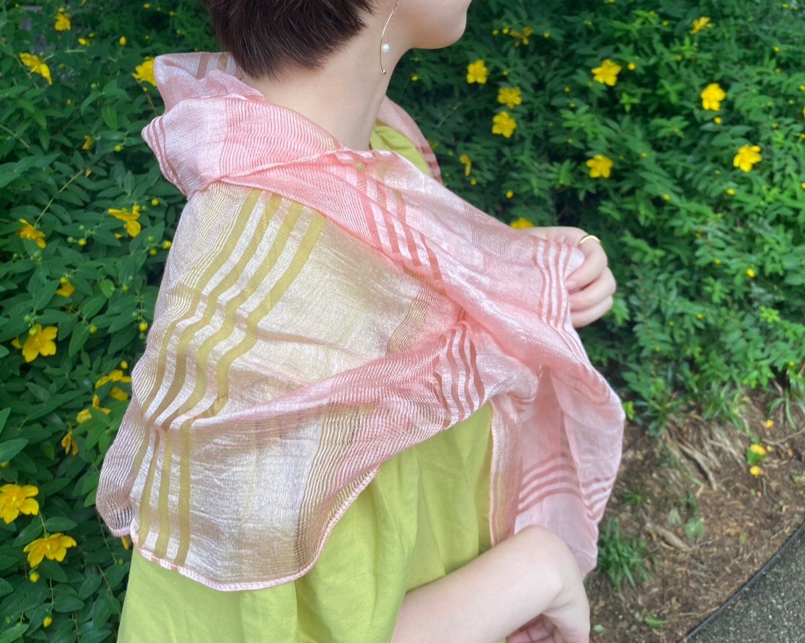
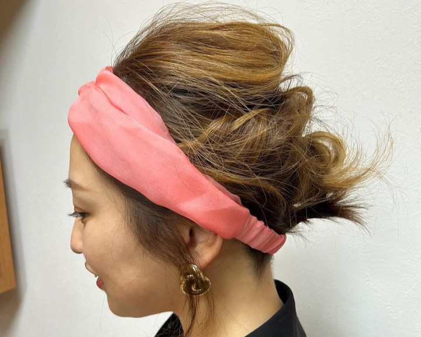

A Lost History

Nihon Akane, Japan’s oldest dye with a 2,000-year history. Its red is so enduring that it seems unfaded even after a millennium, and in ancient Japan it was treasured as a special color symbolizing noble rank. Later, however, other dyes that were easier to work with emerged, and the labor-intensive Nihon Akane disappeared from common practice. Today it no longer reaches the market, and in the wild the plant was so overlooked it came to be treated as a weed—a phantom of the past.
Reweaving the Sunset Hue

The journey to revive the lost color was nothing but hardship. Cultivation demands extremely precise temperature control, and almost no texts remain that record the dyeing techniques. Above all, Nihon Akane contains both red and yellow pigments, so achieving the ideal, beautiful hue is an extraordinarily delicate process. Starting from zero with no established methods, the makers endured endless trial and error. Still, their unwavering dedication pulled this phantom color back into the present.
Wearing the Maker’s Sentiment

The result is a gently warm hue reminiscent of dawns and dusks. This color—born only from the delicate, hands-on work of confronting nature—soothes the heart of anyone who sees it. To wear a color cherished for two thousand years in contemporary daily life is to carry a piece of Japan’s beautiful, endangered tradition forward; it continues to be passed on as it accompanies people in their everyday lives.